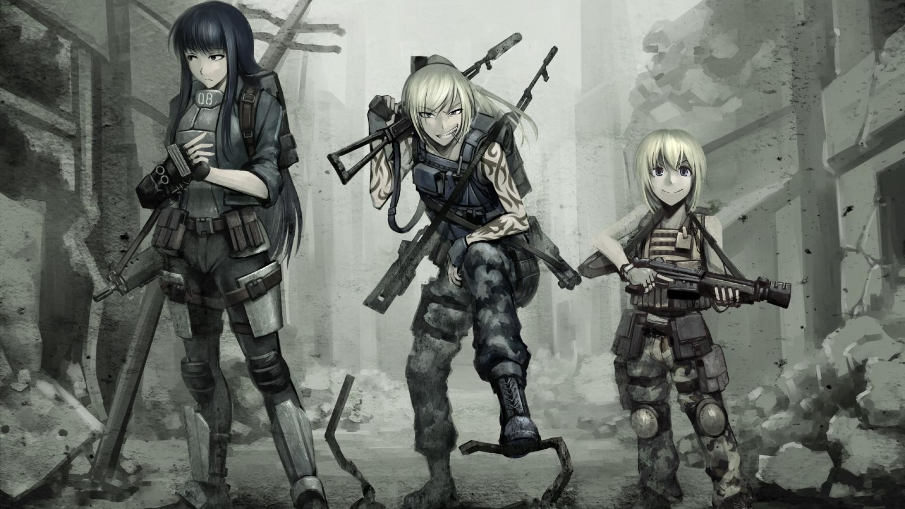

After the gas attack on the captail

now that you have made a base for your group you can support the area
push this revolsion front line
go scout out more areas around you
push to find more wepons and supply